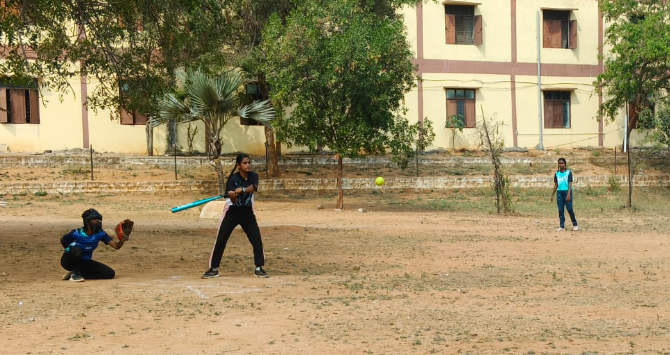
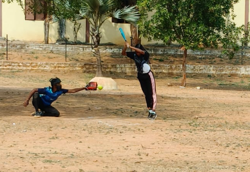
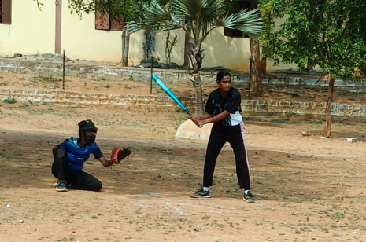
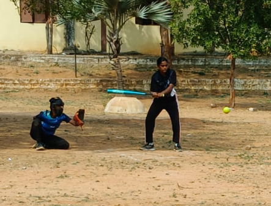

Softball is a team sport similar to baseball, played between two teams of nine or ten players. It was developed in the United States in the late 19th century as a variation of baseball and is now played worldwide. The game is played on a smaller field, and the ball used is larger and softer than a baseball, which is why it is called “softball.” Players score runs by hitting the ball with a bat and running around four bases arranged in a diamond shape. Unlike baseball, the pitcher throws the ball underhand toward the batter. Softball is known for its fast-paced action and requires skills such as hitting, catching, throwing, and teamwork. It is commonly played in schools, colleges, and international competitions, including events organized by the World Baseball Softball Confederation.



